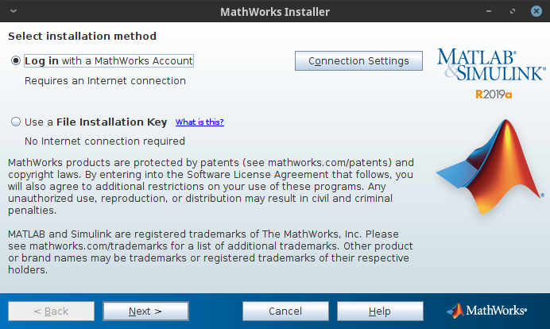
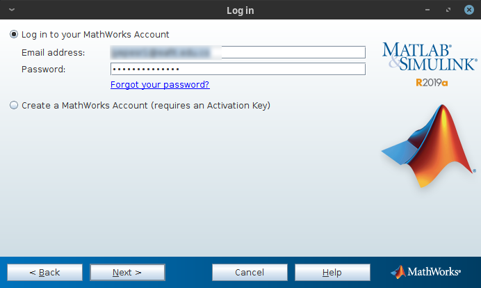
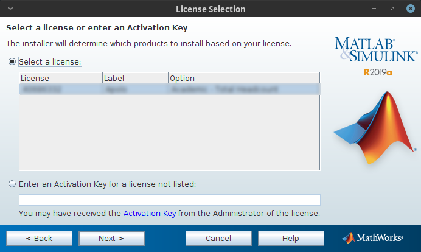
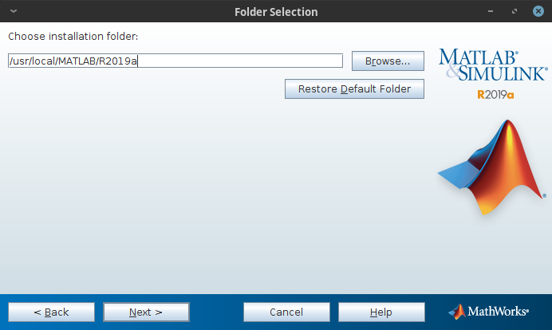
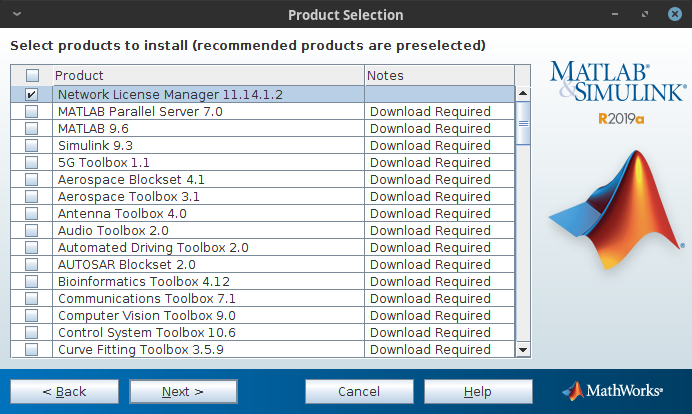
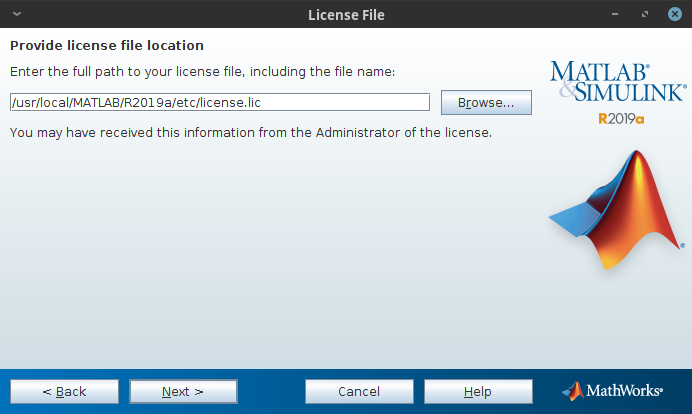
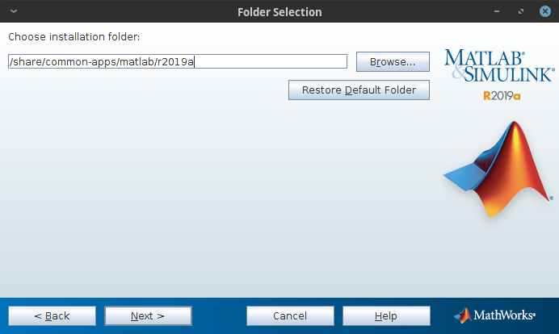
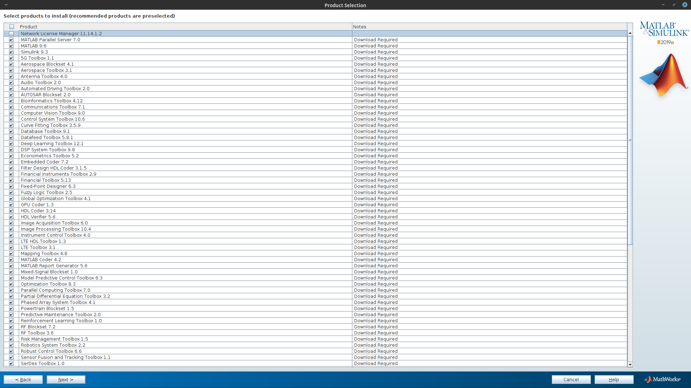

Tested on (Requirements)
License Manager Server: Virtual machine (CentOS 7 Minimal (x86_64))
OS base: CentOS (x86_64) \(\boldsymbol{\ge}\) 6.6
MPI: Intel MPI \(\boldsymbol{\ge}\) 19.0.4 (Mandatory to use with Infiniband networks)
Scheduler: SLURM \(\boldsymbol{\ge}\) 18.08.1
Application: MATLAB Client (Optional)
Extra Libraries:
libXtst (Troubleshooting)
License Manager
The License Manager provides a network license support to allow the usage of the different MATLAB features on the clusters (Apolo II and Cronos).
In this case we have two types of licenses, the first one is for the MATLAB Parallel Server and the second one for MATLAB client with all the toolboxes available.
Next steps will describe the installation and configuration process for the MLM (MATLAB License Manager based on FlexLM [1]):
Get the online installer using your MATLAB account.
Send the installation package to the License Manager server (VM).
scp matlab_R2019a_glnxa64.zip root@<FQDN>:$installer_path
Follow the next steps to run the MATLAB installer.
Unzip and access the installer files.
ssh -X root@<FQDN> cd $installer_path$ mkdir matlab-R2019a mv matlab_R2019a_glnxa64.zip matlab-R2019a cd matlab-R2019a unzip matlab_R2019a_glnxa64.zip
Execute the installer.
./install
Note
Select the installation method (by MATLAB account).
Accept license agreement (yes).
Login (username and password).
Select license (Parallel Server license).
Folder selection (/usr/local/MATLAB/R2019a).
Products selection (License Manager 11.14.1.2).
License file.
Note
Login to the MATLAB admin account and download the license file (license.lic) created for the MATLAB Parallel Server (MATLAB Distribuited Computing Engine) and upload it to the License Manager server in the
/usr/local/MATLAB/R2019a/etcdirectory.scp license.lic root@<FQDN>:/usr/local/MATLAB/R2019a/etcFinish the installation process.
Configure MLM (FlexLM).
Access the License Manager machine via SSH.
Create a system user without privileges to run MLM.
# Create a non-root user to launch matlab (security reasons) ## -u uid ## -d homedir ## -r system user ## -s shell (no login user) useradd -u 110 -c "MDCE" -d /var/tmp -r -s /sbin/nologin matlab
Create the daemon service to execute automatically MLM.
[Unit] Description=MATLAB FlexLM license manager [Service] User=matlab RemainAfterExit=True ExecStart=/usr/local/MATLAB/R2018a/etc/lmstart ExecStop=/usr/local/MATLAB/R2018a/etc/lmdown [Install] WantedBy=multi-user.target
Configure MLM ports and firewall on the license manager machine.
Note
After the installation process, the MLM generates a new license file called
license.daton the/usr/local/MATLAB/R2019a/etcdirectory with the information given inlicense.licfile during the installation process and some additional information showing at following.Review the server port (27000) and specify MLM daemon port (53200) at the top of the license file (
/usr/local/MATLAB/R2019a/etc/license.dat)SERVER <HOSTNAME> <HOSTID> 27000 DAEMON MLM "/usr/local/MATLAB/R2019a/etc/MLM" port=53200 ...
Warning
If you do NOT have this file, please create it and add the above mentioned information.
Open those ports in License manager machine firewall (CentOS 7).
firewall-cmd --permanent --add-port=53200/tcp firewall-cmd --permanent --add-port=27000/tcp
Configure both licenses (Parallel Server and MATLAB client with all the toolboxes).
Download the
license.licfile related with MATLAB client and its toolboxes from the MATLAB administrator account, then open it with a text editor to copy all the INCREMENTS lines.Append all (MATLAB client and its toolboxes) INCREMENTS lines (licensed products) to end of the
license.daton the License Manager server.SERVER <FQDN> <HOSTID> 27000 DAEMON MLM "/usr/local/MATLAB/R2019a/etc/MLM" port=53200 # BEGIN--------------BEGIN--------------BEGIN # MathWorks license passcode file. # LicenseNo: ######## HostID: ############ # # R2019a # INCREMENT MATLAB_Distrib_Comp_Engine MLM 39 <END_DATE> <NUM_WORKES> \ ... INCREMENT MATLAB MLM 39 <END_DATE> ##################### \ ... INCREMENT SIMULINK MLM 39 <END_DATE> ##################### \ ... ... continue ... ...
Enable and start the daemon.
systemctl enable lm-matlab systemctl start lm-matlab
Check the log file to see if everything works properly.
/var/tmp/lm_TMW.log10:55:13 (lmgrd) ----------------------------------------------- 10:55:13 (lmgrd) Please Note: 10:55:13 (lmgrd) 10:55:13 (lmgrd) This log is intended for debug purposes only. 10:55:13 (lmgrd) In order to capture accurate license 10:55:13 (lmgrd) usage data into an organized repository, 10:55:13 (lmgrd) please enable report logging. Use Flexera Software LLC's 10:55:13 (lmgrd) software license administration solution, 10:55:13 (lmgrd) FlexNet Manager, to readily gain visibility 10:55:13 (lmgrd) into license usage data and to create 10:55:13 (lmgrd) insightful reports on critical information like 10:55:13 (lmgrd) license availability and usage. FlexNet Manager 10:55:13 (lmgrd) can be fully automated to run these reports on 10:55:13 (lmgrd) schedule and can be used to track license 10:55:13 (lmgrd) servers and usage across a heterogeneous 10:55:13 (lmgrd) network of servers including Windows NT, Linux 10:55:13 (lmgrd) and UNIX. 10:55:13 (lmgrd) 10:55:13 (lmgrd) ----------------------------------------------- 10:55:13 (lmgrd) 10:55:13 (lmgrd) 10:55:13 (lmgrd) Server's System Date and Time: Wed Jul 17 2019 10:55:13 -05 10:55:13 (lmgrd) SLOG: Summary LOG statistics is enabled. 10:55:13 (lmgrd) FlexNet Licensing (v11.14.1.2 build 208719 x64_lsb) started on <FQDN> (linux) (7/17/2019) 10:55:13 (lmgrd) Copyright (c) 1988-2017 Flexera Software LLC. All Rights Reserved. 10:55:13 (lmgrd) World Wide Web: http://www.flexerasoftware.com 10:55:13 (lmgrd) License file(s): /var/tmp/lm_TMW.dat 10:55:13 (lmgrd) lmgrd tcp-port 27000 10:55:13 (lmgrd) (@lmgrd-SLOG@) =============================================== 10:55:13 (lmgrd) (@lmgrd-SLOG@) === LMGRD === 10:55:13 (lmgrd) (@lmgrd-SLOG@) Start-Date: Wed Jul 17 2019 10:55:13 -05 10:55:13 (lmgrd) (@lmgrd-SLOG@) PID: 14118 10:55:13 (lmgrd) (@lmgrd-SLOG@) LMGRD Version: v11.14.1.2 build 208719 x64_lsb ( build 208719 (ipv6)) 10:55:13 (lmgrd) (@lmgrd-SLOG@) 10:55:13 (lmgrd) (@lmgrd-SLOG@) === Network Info === 10:55:13 (lmgrd) (@lmgrd-SLOG@) Listening port: 27000 10:55:13 (lmgrd) (@lmgrd-SLOG@) 10:55:13 (lmgrd) (@lmgrd-SLOG@) === Startup Info === 10:55:13 (lmgrd) (@lmgrd-SLOG@) Server Configuration: Single Server 10:55:13 (lmgrd) (@lmgrd-SLOG@) Command-line options used at LS startup: -z -c /var/tmp/lm_TMW.dat 10:55:13 (lmgrd) (@lmgrd-SLOG@) License file(s) used: /var/tmp/lm_TMW.dat 10:55:13 (lmgrd) (@lmgrd-SLOG@) =============================================== 10:55:13 (lmgrd) Starting vendor daemons ... 10:55:13 (lmgrd) Using vendor daemon port 53200 specified in license file 10:55:13 (lmgrd) Started MLM (internet tcp_port 53200 pid 14120) 10:55:13 (MLM) FlexNet Licensing version v11.14.1.2 build 208719 x64_lsb 10:55:13 (MLM) SLOG: Summary LOG statistics is enabled. 10:55:13 (MLM) SLOG: FNPLS-INTERNAL-CKPT1 10:55:13 (MLM) SLOG: VM Status: 0 10:55:13 (MLM) Server started on <FQDN> for: MATLAB_Distrib_Comp_Engine 10:55:13 (MLM) MATLAB SIMULINK MATLAB_5G_Toolbox 10:55:13 (MLM) AUTOSAR_Blockset Aerospace_Blockset Aerospace_Toolbox 10:55:13 (MLM) Antenna_Toolbox Audio_System_Toolbox Automated_Driving_Toolbox 10:55:13 (MLM) Bioinformatics_Toolbox Communication_Toolbox Video_and_Image_Blockset 10:55:13 (MLM) Control_Toolbox Curve_Fitting_Toolbox Signal_Blocks 10:55:13 (MLM) Data_Acq_Toolbox Database_Toolbox Datafeed_Toolbox 10:55:13 (MLM) Neural_Network_Toolbox Econometrics_Toolbox RTW_Embedded_Coder 10:55:13 (MLM) Filter_Design_HDL_Coder Fin_Instruments_Toolbox Financial_Toolbox 10:55:13 (MLM) Fixed_Point_Toolbox Fuzzy_Toolbox GPU_Coder 10:55:13 (MLM) GADS_Toolbox Simulink_HDL_Coder EDA_Simulator_Link 10:55:13 (MLM) Image_Acquisition_Toolbox Image_Toolbox Instr_Control_Toolbox 10:55:13 (MLM) LTE_HDL_Toolbox LTE_Toolbox MATLAB_Coder 10:55:13 (MLM) MATLAB_Builder_for_Java Compiler MATLAB_Report_Gen 10:55:13 (MLM) MAP_Toolbox Mixed_Signal_Blockset MPC_Toolbox 10:55:13 (MLM) MBC_Toolbox OPC_Toolbox Optimization_Toolbox 10:55:13 (MLM) Distrib_Computing_Toolbox PDE_Toolbox Phased_Array_System_Toolbox 10:55:13 (MLM) Powertrain_Blockset Pred_Maintenance_Toolbox RF_Blockset 10:55:13 (MLM) RF_Toolbox Reinforcement_Learn_Toolbox Risk_Management_Toolbox 10:55:13 (MLM) Robotics_System_Toolbox Robust_Toolbox Sensor_Fusion_and_Tracking 10:55:13 (MLM) SerDes_Toolbox Signal_Toolbox SimBiology 10:55:13 (MLM) SimEvents SimDriveline Power_System_Blocks 10:55:13 (MLM) SimHydraulics SimMechanics Simscape 10:55:13 (MLM) Virtual_Reality_Toolbox SL_Verification_Validation Simulink_Code_Inspector 10:55:13 (MLM) Real-Time_Workshop Simulink_Control_Design Simulink_Coverage 10:55:13 (MLM) Simulink_Design_Optim Simulink_Design_Verifier Real-Time_Win_Target 10:55:13 (MLM) Simulink_PLC_Coder XPC_Target SIMULINK_Report_Gen 10:55:13 (MLM) Simulink_Requirements Simulink_Test SoC_Blockset 10:55:13 (MLM) Excel_Link Stateflow Statistics_Toolbox 10:55:13 (MLM) Symbolic_Toolbox System_Composer Identification_Toolbox 10:55:13 (MLM) Text_Analytics_Toolbox Trading_Toolbox Vehicle_Dynamics_Blockset 10:55:13 (MLM) Vehicle_Network_Toolbox Vision_HDL_Toolbox WLAN_System_Toolbox 10:55:13 (MLM) Wavelet_Toolbox SimElectronics 10:55:13 (MLM) EXTERNAL FILTERS are OFF 10:55:14 (lmgrd) MLM using TCP-port 53200 10:55:14 (MLM) License verification completed successfully. 10:55:14 (MLM) SLOG: Statistics Log Frequency is 240 minute(s). 10:55:14 (MLM) SLOG: TS update poll interval is 600 seconds. 10:55:14 (MLM) SLOG: Activation borrow reclaim percentage is 0. 10:55:14 (MLM) (@MLM-SLOG@) =============================================== 10:55:14 (MLM) (@MLM-SLOG@) === Vendor Daemon === 10:55:14 (MLM) (@MLM-SLOG@) Vendor daemon: MLM 10:55:14 (MLM) (@MLM-SLOG@) Start-Date: Wed Jul 17 2019 10:55:14 -05 10:55:14 (MLM) (@MLM-SLOG@) PID: 14120 10:55:14 (MLM) (@MLM-SLOG@) VD Version: v11.14.1.2 build 208719 x64_lsb ( build 208719 (ipv6)) 10:55:14 (MLM) (@MLM-SLOG@) 10:55:14 (MLM) (@MLM-SLOG@) === Startup/Restart Info === 10:55:14 (MLM) (@MLM-SLOG@) Options file used: None 10:55:14 (MLM) (@MLM-SLOG@) Is vendor daemon a CVD: No 10:55:14 (MLM) (@MLM-SLOG@) Is TS accessed: No 10:55:14 (MLM) (@MLM-SLOG@) TS accessed for feature load: -NA- 10:55:14 (MLM) (@MLM-SLOG@) Number of VD restarts since LS startup: 0 10:55:14 (MLM) (@MLM-SLOG@) 10:55:14 (MLM) (@MLM-SLOG@) === Network Info === 10:55:14 (MLM) (@MLM-SLOG@) Listening port: 53200 10:55:14 (MLM) (@MLM-SLOG@) Daemon select timeout (in seconds): 1 10:55:14 (MLM) (@MLM-SLOG@) 10:55:14 (MLM) (@MLM-SLOG@) === Host Info === 10:55:14 (MLM) (@MLM-SLOG@) Host used in license file: <FQDN> 10:55:14 (MLM) (@MLM-SLOG@) Running on Hypervisor: Not determined - treat as Physical 10:55:14 (MLM) (@MLM-SLOG@) =============================================== ...
After that, the license manager service should run without problems, if there is any trouble with the service you can debug this process checking the log file (
/var/tmp/lm_TMW.log) to understand what is happening.tailf /var/tmp/lm_TMW.log
MATLAB Parallel Server
This entry described the installation process of MATLAB Parallel Server on the cluster and its integration with the License Manager.
Get the online installer using your MATLAB account.
Send the installation file to the master node on your cluster.
scp matlab_R2019a_glnxa64.zip root@<FQDN>:$installer_path$
Follow next steps to run the MATLAB installer.
Unzip and access the installer files.
ssh -X root@<FQDN> cd $installer_path$ mkdir matlab-R2019a mv matlab_R2019a_glnxa64.zip matlab-R2019a cd matlab-R2019a unzip matlab_R2019a_glnxa64.zip
Create the installation directory.
mkdir -p /share/apps/matlab/r2019a
Execute the installer.
./install
Note
Select the installation method (by MATLAB account).
Accept license agreement (yes).
Login (username and password).
Select license (Parallel Server license).
Folder selection (
/share/common-apps/matlab/r2019a).Note
Use a shared file system to do an unique installation across all the nodes and both clusters.
Products selection (All products except License Manager 11.14.1.2).
Note
MATLAB recommends install every Toolbox available because in this way they can be used by Parallel Server workers.
License file (
/share/apps/matlab/r2019a/etc).Note
Download and upload the modified
license.datfile on the License Manager server to the/share/apps/matlab/r2019a/etcdirectory on the cluster.mkdir -p /share/apps/matlab/r2019a/etc cd /share/apps/matlab/r2019a/etc sftp user@<LICENSE_MANAGER_SERVER> cd /usr/local/MATLAB/R2019a/etc mget license.dat
Wait to finish the installation process.
Intregration with SLURM
To integrate the MATLAB client on the cluster to use SLURM as resource manager you have to follow next steps:
Create a folder called
cluster.localin the following path bash:/share/common-apps/matlab/r2019a/toolbox/local/.mkdir /share/common-apps/matlab/r2019a/toolbox/local/cluster.localCopy the MATLAB integration scripts into the above mentioned folder (
Scripts).scp cluster.local.R2019a.tar.gz <user>@<FQDN>:/path/to/file mv /path/to/file/cluster.local.R2019a.tar.gz /share/common-apps/matlab/r2019a/toolbox/local/cluster.local cd /share/common-apps/matlab/r2019a/toolbox/local/cluster.local tar xf cluster.local.R2019a.tar.gz rm cluster.local.R2019a.tar.gz
Open the MATLAB client on the cluster to configure the paths for the integration scripts.
Note
Add the module file to be able to load MATLAB for the further steps. Please refer to Module file section.
Warning
If MATLAB client is installed in a system directory, we strongly suggest to open it with admin privileges, it is only necessary the first time to configure it.
module load matlab/r2019a matlab -nodisplay
>> addpath(genpath('/share/common-apps/matlab/r2019a/toolbox/local/cluster.local')) >> savepath /share/common-apps/matlab/r2019a/toolbox/local/pathdef.m
Note
For more info about the last commands please refer to MathWorks documentation.
Configuring Cluster Profiles
Open again your MATLAB Client (without admin privileges)
module load matlab/r2019a matlab -nodisplay
Load the cluster profile and configure it to submit jobs using SLURM via Parallel Server.
>> configCluster >> % Must set TimeLimit before submitting jobs to >> % the cluster. >> % i.e. to set the TimeLimit >> c = parcluster('cluster R2019a'); >> c.AdditionalProperties.TimeLimit = '1:00:00'; >> c.saveProfile
Warning
The
configClustercommand should be run only the very first time you configure your MATLAB client. It is NOT necessary to run the command each time.Custom options
There are some additional properties you can set in order to get the desired resources with Slurm
>> c = parcluster() >> c.AdditionalProperties ans = AdditionalProperties with properties: AccountName: '' AdditionalSubmitArgs: '' EmailAddress: '' EmailType: '' EnableDebug: 0 MemUsage: '' Partition: '' ProcsPerNode: 0 Reservation: '' TimeLimit: '' UseSmpd: 0
TimeLimit (mandatory) → Set a limit on the total run time of the job allocation (more info).
e.g.
c.AdditionalProperties.TimeLimit = '3-10:00:00';
AccountName → Change the default user account on Slurm.
e.g.
c.AdditionalProperties.AccountName = 'apolo';
ClusterHost → Another way to change the cluster hostname to sumbit jobs.
e.g.
c.AdditionalProperties.ClusterHost = 'apolo.eafit.edu.co';
EmailAddress → Get all job notifications by e-mail.
e.g.
c.AdditionalProperties.EmailAddress = 'apolo@eafit.edu.co';
EmailType → Get only the desired notifications based on sbatch options.
e.g.
c.AdditionalProperties.EmailType = 'END,TIME_LIMIT_50';
MemUsage → Total amount of memory per MATLAB worker (more info).
e.g.
c.AdditionalProperties.MemUsage = '5G';
NumGpus → Number of GPUs to use in a job (currently the maximum possible NumGpus value is two, also if you select this option you have to use the ‘accel’ partition on Apolo II).
e.g.
c.AdditionalProperties.NumGpus = '2';
Partition → Select the desire partition to submit jobs (by default longjobs partition will be used)
e.g.
c.AdditionalProperties.Partition = 'bigmem';
Reservation → Submit a job into a reservation (more info).
e.g.
c.AdditionalProperties.Reservation = 'reservationName';
AdditionalSubmitArgs → Any valid sbatch parameter (raw) (more info)
e.g.
c.AdditionalProperties.AdditionalSubmitArgs = '--no-requeue --exclusive';
Troubleshooting
When you ran the MATLAB installer with the command
./install, it prints:Preparing installation files ... Installing ...
Then a small MATLAB window appears and after a while it closes and prints on prompt:
Finished
To solve this problem, you have to find the root cause modifying
$MATLABINSTALLERPATH/bin/glnxa64/install_unixscript to look thestderrorand understand what is happening.At line 918 change this statement
eval "$java_cmd 2> /dev/null"toeval "$java_cmd", by this way you can see the related errors launching the MATLAB installer.e.g. missing library libXtst.so.6
Module file
#%Module1.0####################################################################
##
## module load matlab/r2019a
##
## /share/apps/modules/matlab/r2019a
## Written by Johan Yepes Rios
##
proc ModulesHelp {} {
global version modroot
puts stderr "Sets the environment for using Matlab R2019a\
\nin the shared directory /share/common-apps/matlab/r2019a."
}
module-whatis "(Name________) matlab"
module-whatis "(Version_____) r2019a"
module-whatis "(Compilers___) "
module-whatis "(System______) x86_64-redhat-linux"
module-whatis "(Libraries___) "
# for Tcl script use only
set topdir /share/common-apps/matlab/r2019a
set version r2019a
set sys x86_64-redhat-linux
conflict matlab
prepend-path PATH $topdir/bin